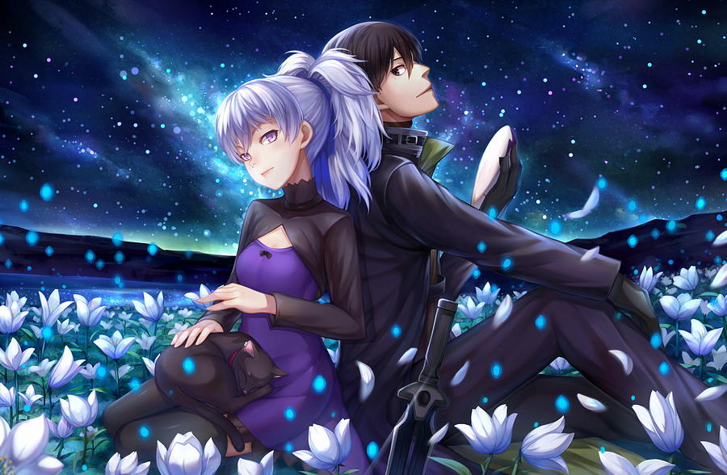

- 흑의 계약자
- 칠흑의 꽃
- 유성의 제미니
DARKER THAN BLACK
1. 개요
BONES에서 제작한 SF 액션 오리지널 애니메이션 시리즈.
이니셜을 따와 'DTB(DARKER THAN BLACK)'로 줄여 부르기도 한다
2007년 4월 첫 방영된 DARKER THAN BLACK -흑의 계약자-가 시리즈 첫 작품이며,
해당 작품이 방영될 때는 시리즈화가 되기 전이었기에
한국내에서는 DARKER THAN BLACK이라는 제목보다는 부제인 흑의 계약자라는 제목으로 유명했었다.
흑의 계약자는 TVA 25화, DVD 수록 미방영분인 26화(오마케에 가까운 개그 에피소드)를 포함해
총 26화로 완결. 이후 코믹스로 DARKER THAN BLACK -칠흑의 꽃-이 나와 시리즈화되기 시작하였고
2009년 10월 2기인 DARKER THAN BLACK -유성의 제미니-가 방영, 12월에 12화로 완결되었다.
그리고 2010년 2월부터 OVA인 DARKER THAN BLACK -외전-이 유성의 제미니 DVD/BD에 같이 포함되어 출시되었다.
본즈가 제작해온 여러 오리지널 애니메이션 중에서도 상당한 인기를 자랑하는 작품 중 하나.
인기 요소라고 하면 멋진 캐릭터들과 뛰어난 액션, 수려한 작화 등이 있지만 역시 '분기'를 꼽을 수 있겠다.
DTB 특유의 어두우면서도 신비한 분위기가 시청자들을 사로잡았다.
